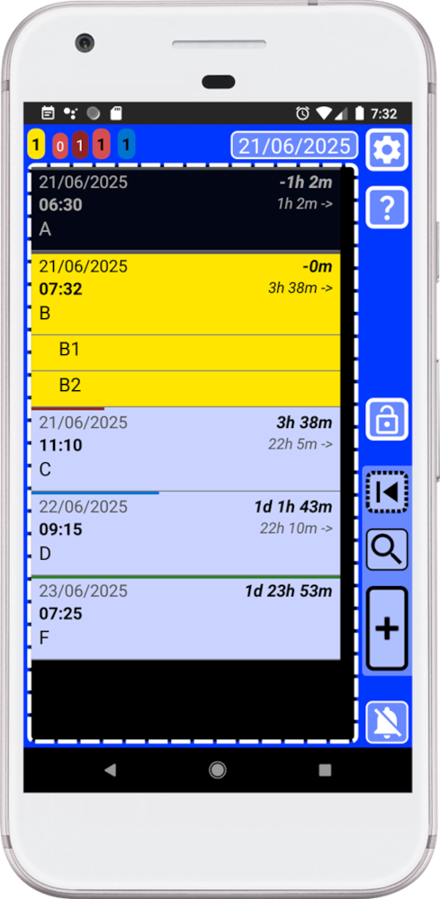

⏮
16. ¿Cómo fijar un registro o lista?
Esta función permite fijar un registro para que siempre tengas acceso rápido a él.
Puedes fijar cualquier registro o lista — por ejemplo, una lista de compras, ideas para tu proyecto o cualquier otra cosa en la que estés trabajando. Una vez fijado, puedes acceder al instante manteniendo pulsado este botón dentro de la ventana principal (azul).
El botón mostrará una animación amarilla con dos vibraciones para indicar que estamos usando la función secundaria del botón, abrir registro fijado.
Gracias al sistema de fijado:
. En cuanto recuerdes que necesitas comprar algo, ahora puedes añadirlo en segundos a tu lista de compras.
. Añade tus ideas para tu proyecto siempre que te llegue la inspiración.
. O simplemente mantén tu registro o lista más usado al alcance de la mano.
Rápido, sin búsquedas, sin complicaciones — solo abre tu registro fijado y añade lo que necesites.
Fijar un registro es tan fácil como mantener pulsado cualquier registro en la lista de la ventana principal (azul). Una animación amarilla con dos vibraciones indicará que el registro ha sido fijado.
Por ejemplo, usemos la lista que acabamos de crear con los registros B (resaltados en amarillo):

Cuando creamos un registro y no modificamos nada — solo añadimos un texto y lo guardamos —, el registro se creará usando la hora actual y no estará completado, por lo que se mostrará como un registro amarillo. Consulta las reglas básicas en la ayuda dentro de la app.
La lista con los registros B podría ser nuestra lista de compras o algo en lo que estemos trabajando actualmente. Como queremos tener acceso rápido en cualquier momento, ahora podemos fijarla para facilitarlo.
¿Cómo hacerlo?
En la ventana principal (azul), puedes mantener pulsado cualquier elemento de la lista para fijarlo.
1. Abre SECURElogBook y ve a la ventana principal, con fondo azul:
2. Mantén pulsado el registro que quieres fijar — en este caso queremos fijar la lista con los registros B, así que mantendremos pulsado el primero.
3. Verás una animación amarilla y sentirás dos vibraciones.
4. Aparecerá un mensaje indicando que el registro ha sido fijado.
Cuando un registro está fijado, puedes moverlo en el tiempo donde quieras, y siempre tendrás un acceso rápido a él.
5. Para abrir el registro fijado, mantén pulsado este botón
6. Veremos una animación amarilla, sentirás dos vibraciones y el registro fijado se abrirá.
Esto no es solo otra app — es una experiencia cuidadosamente diseñada. Cada elemento de la interfaz sigue un lenguaje de diseño preciso y coherente para que los usuarios nunca duden. Los botones no solo se ven y actúan igual, sino que se sienten vivos, con retroalimentación intencionada a través de animaciones y vibraciones que responden de forma distinta según tu acción. Es rápida, fluida y tranquilizadora, construida para eliminar la frustración de pulsaciones fallidas o acciones repetidas. Lo que sostienes es un tipo de interfaz único — claro en su propósito, agradable de usar y creado con orgullo. No hay nada igual.
Sí, puede parecer un poco diferente a primera vista — eso es intencional. No quise seguir a la multitud; quise ofrecer algo más. A pesar de su aspecto diferente, sigue una lógica visual muy básica. Gracias a ello, cuanto más uses la app, más rápida y sencilla será. Por cierto, esa lógica está explicada en el manual de reglas básicas dentro de tu app.